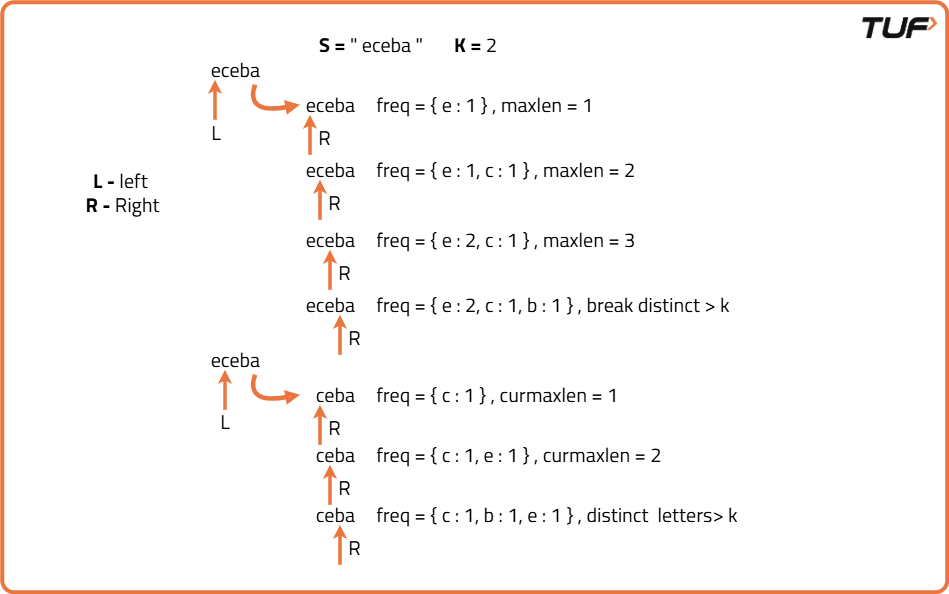
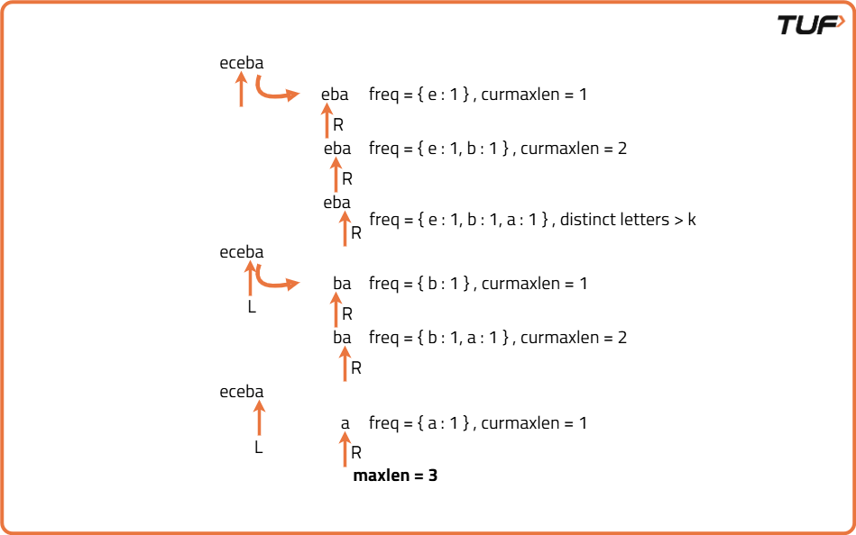
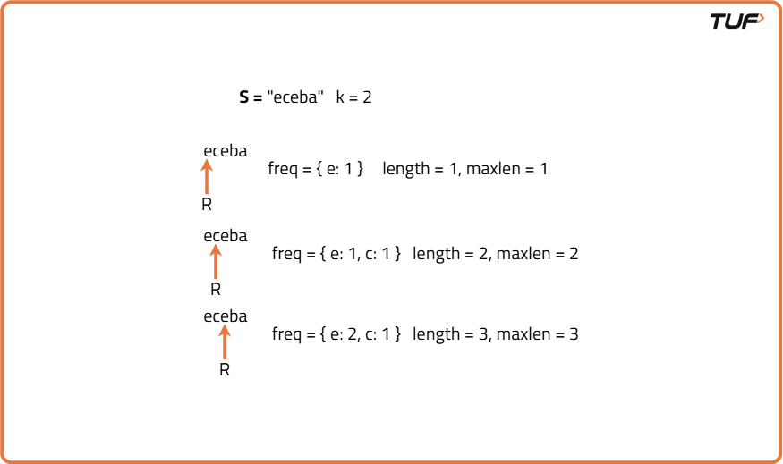
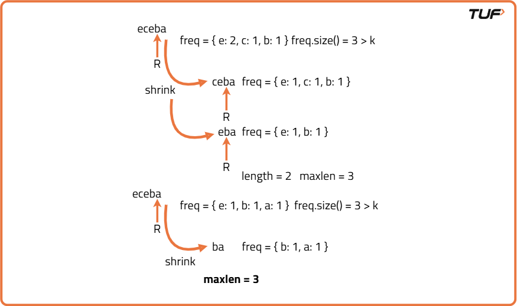

Longest Substring with At Most K Distinct Characters
Problem Statement: Given a string s and an integer k.Find the length of the longest substring with at most k distinct characters
Examples
Input :s = "aababbcaacc" , k = 2 Output :6 Explanation :The longest substring with at most two distinct characters is "aababb". The length of the string 6
Input : s = "abcddefg" , k = 3 Output : 4 Explanation : The longest substring with at most three distinct characters is "bcdd". The length of the string 4.
Disclaimer: Here is the practice link to help you assess your knowledge better. It's highly recommend trying to solve it before looking at the solution.
Brute force Approach
Algorithm
k distinct characters. If it does, we record its length and keep track of the maximum length found so far.- Loop over all possible starting indices of substrings.
- For each starting index, loop over all possible ending indices till the end of the string.
- For each such substring, track the number of distinct characters using a set or frequency map.
- If the number of distinct characters is less than or equal to the given limit, update the maximum length found so far.
- After checking all substrings, return the maximum valid length obtained.


Code
#include <bits/stdc++.h>
using namespace std;
class Solution {
public:
// Function to find the length of the longest substring with at most K distinct characters
int lengthOfLongestSubstringKDistinct(string s, int k) {
// Store the maximum length of valid substring
int maxLength = 0;
// Try every possible substring
for (int i = 0; i < s.size(); i++) {
// Use set/map to track distinct characters in current substring
unordered_map<char, int> freq;
for (int j = i; j < s.size(); j++) {
// Add current character to map and update frequency
freq[s[j]]++;
// If number of distinct characters exceeds k, break
if (freq.size() > k) break;
// Update maximum length if valid
maxLength = max(maxLength, j - i + 1);
}
}
// Return the maximum valid substring length
return maxLength;
}
};
// Driver code
int main() {
Solution sol;
string s = "eceba";
int k = 2;
cout << sol.lengthOfLongestSubstringKDistinct(s, k) << endl;
return 0;
}
Complexity Analysis
Time Complexity:O(n²) ,We are checking every possible substring which takes, and for each substring, we count distinct characters using a map/set which takes up to O(n) in the worst case. But since we break early when distinct characters exceed K, the inner loop doesn't always go to the end.Hence worst-case complexity remains O(n²).
Space Complexity:O(k) ,We use a hash map to store character frequencies for each substring, and in the worst case, it stores at most k distinct characters.
Optimal Approach
Algorithm
- Initialize two pointers to define the sliding window: one at the start and one at the end.
- Use a hashmap to track the frequency of each character within the window.
- Expand the window by moving the right pointer forward.
- If the number of distinct characters exceeds the limit, shrink the window from the left.
- At every valid window, update the maximum length found so far.
- Continue until the end of the string is reached.


Code
#include <bits/stdc++.h>
using namespace std;
class Solution {
public:
// Function to find longest substring with at most K distinct characters
int lengthOfLongestSubstringKDistinct(string s, int k) {
// Edge case: if k is 0 or string is empty
if (k == 0 || s.empty()) return 0;
// Hash map to store frequency of characters in current window
unordered_map<char, int> freq;
// Initialize left pointer of sliding window
int left = 0;
// Initialize variable to store maximum length
int maxLen = 0;
// Loop through the string using right pointer
for (int right = 0; right < s.length(); right++) {
// Include current character into frequency map
freq[s[right]]++;
// Shrink window if number of distinct characters exceeds k
while (freq.size() > k) {
freq[s[left]]--;
// If character count becomes zero, erase from map
if (freq[s[left]] == 0) {
freq.erase(s[left]);
}
// Move left pointer ahead
left++;
}
// Update maxLen with current valid window size
maxLen = max(maxLen, right - left + 1);
}
// Return the final answer
return maxLen;
}
};
// Driver code
int main() {
Solution sol;
string s = "eceba";
int k = 2;
cout << sol.lengthOfLongestSubstringKDistinct(s, k) << endl;
return 0;
}
Complexity Analysis
Time Complexity:O(n) ,We iterate through the string once, and each character is added and removed from the map at most once. So the overall time complexity is linear.
Space Complexity: O(k) ,We store at most k characters in the frequency map at any given time, so space used is proportional to k.